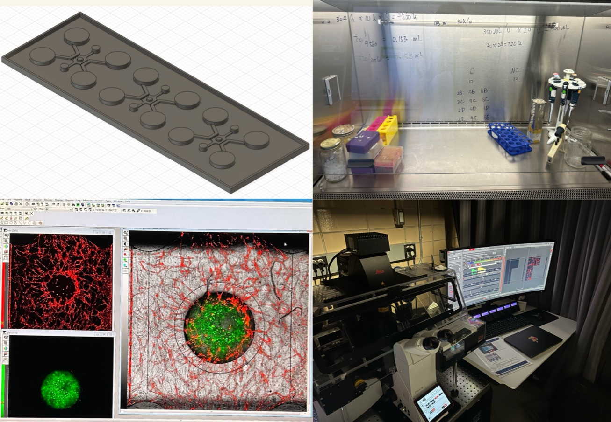
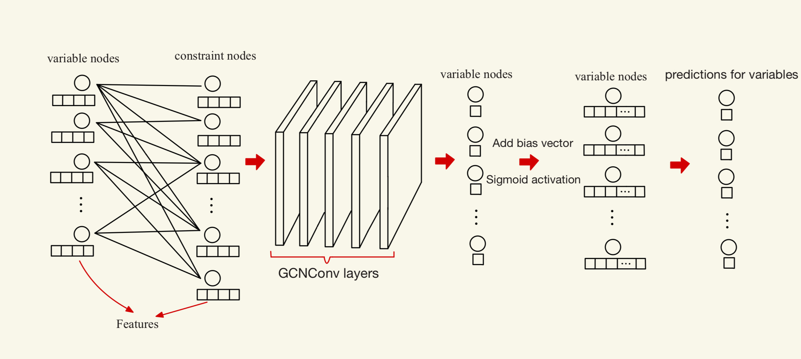
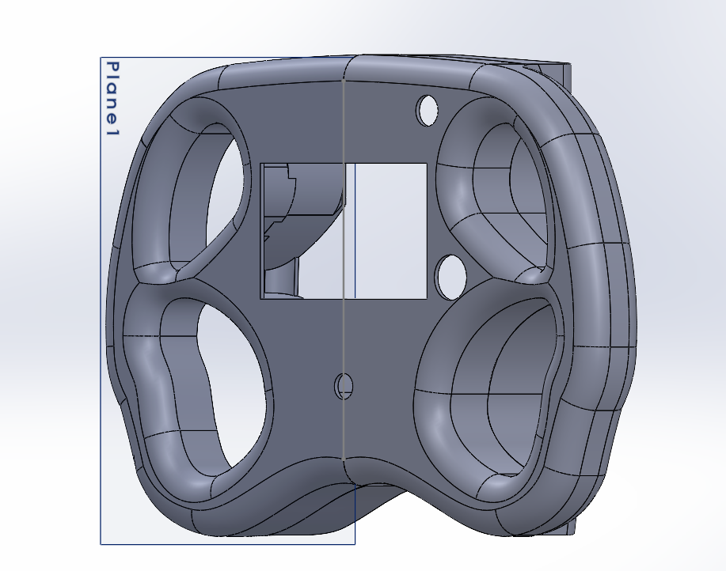
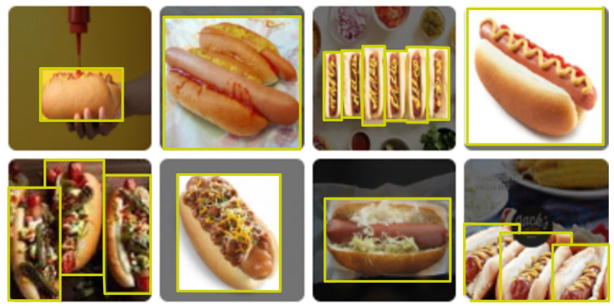
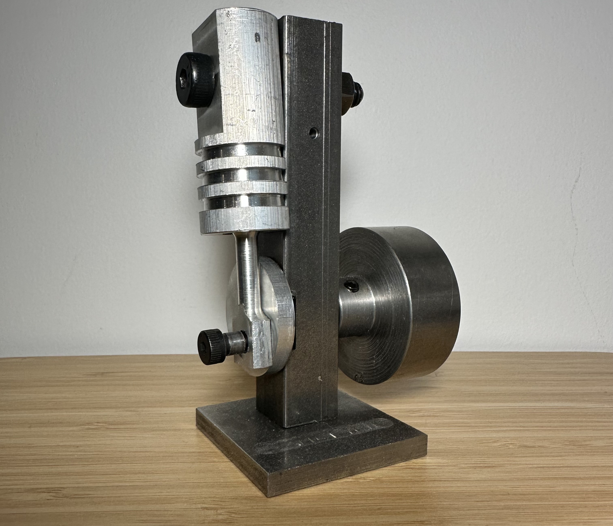
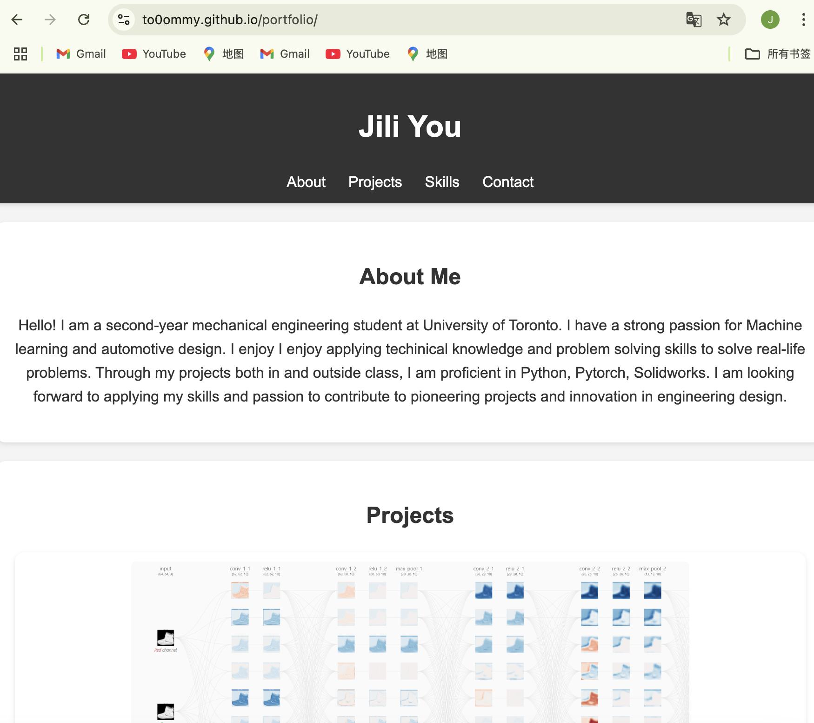
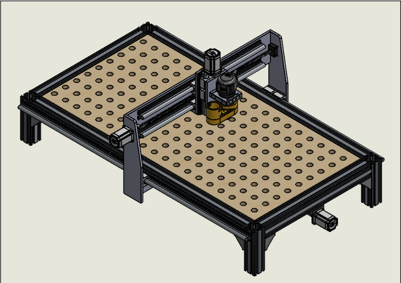
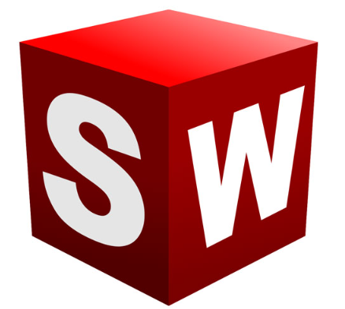
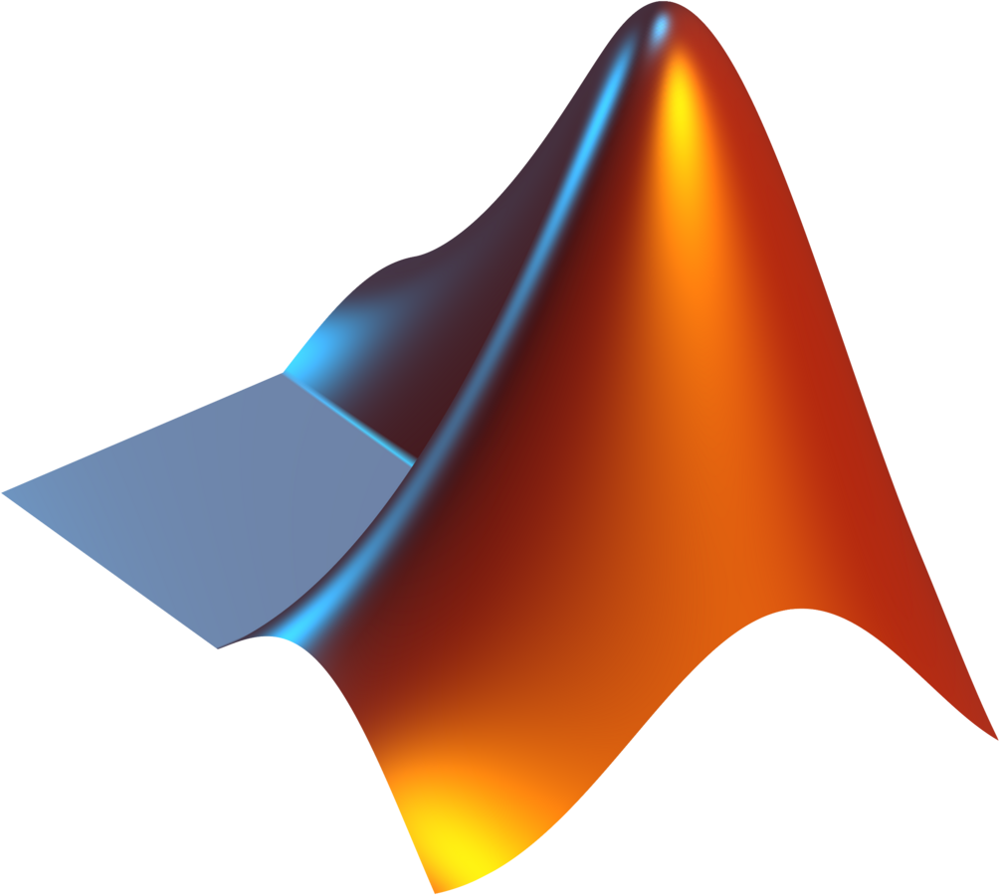

<!DOCTYPE html>
<html lang="en">
<head>
    <meta charset="UTF-8">
    <meta name="viewport" content="width=device-width, initial-scale=1.0">
    <title>My Portfolio</title>
    <link rel="stylesheet" href="css/style.css">
</head>
<body>
    <!-- Your content -->
    <script src="js/script.js"></script>
</body>
</html>

<!DOCTYPE html>
<html lang="en">
<head>
    <meta charset="UTF-8">
    <meta name="viewport" content="width=device-width, initial-scale=1.0">
    <title>My Portfolio</title>
    <link rel="stylesheet" href="css/style.css">
</head>
<body>
    <!-- Header Section -->
    <header>
        <h1>Jili You</h1>
        <nav>
            <a href="#about">About</a>
            <a href="#projects">Projects</a>
            <a href="#skills">Skills</a>
            <a href="#contact">Contact</a>
        </nav>
    </header>

    <!-- About Section -->
    <section id="about">
        <h2>About Me</h2>
        <p>Hello! I am a third-year Mechanical Engineering student at the University of Toronto. I have a strong passion for machine learning, automotive design, 
            and the integration of biomedical and mechanical fields. I enjoy applying technical knowledge and problem-solving skills to tackle real-world challenges. 
            Through my projects both in and outside class, I have gained proficiency in Python, PyTorch, and SolidWorks. I look forward to applying my skills and passion
             to contribute to pioneering projects and innovations in mechanical engineering design and biomedical applications.
            </p>

    </section>
    <!-- project section -->
    <section id="projects">
        <h1>Projects</h1>
        <div class="slideshow-container">
            <!-- Project 1 -->
            <div class="slide">
                
                <div class="description">
                    <h2>Tumour-On-A-Chip Model</h2>
                    <p>As a Research Assistant at the Institute of Biomedical Engineering (IBME) – IBMT Laboratory, 
            I worked under the mentorship of PhD student Han Shao and Professor Edmond Young to develop 
            a tumour-on-a-chip platform that models the tumour microenvironment in vitro. My role included 
            <b>microfluidic device fabrication</b> (channel design, PDMS casting, and bonding), 
            <b>cell culture</b> (MDA-MB-231 breast cancer cells, GFP-A549 lung cancer cells, fibroblasts, 
            and endothelial cells using sterile technique), and <b>imaging & data analysis</b> 
            (microscopy of brightfield and fluorescent samples, with quantitative analysis of cell 
            morphology and growth). This project provides a physiologically relevant platform to study 
            tumour progression, cancer–stroma interactions, and therapeutic response, offering an 
            improved alternative to conventional 2D cell culture while reducing reliance on animal models.
                    </p>
                </div>
            </div>
            <!-- Project 2 -->
            <div class="slide">
                
                <div class="description">
                    <h2>Graph Neural Networks for Vulcanizing Planning Decisions</h2>
                    <p>  This project implemented Graph Neural Networks (GNNs) to address the Vulcanizing Planning Decision Problem in rubber manufacturing. 
                        The model was designed to process large-scale datasets by capturing complex variable–constraint relationships inherent in the vulcanizing process. 
                        Work focused on developing and tuning the GNN architecture to balance scalability with predictive accuracy, while explicitly incorporating demand 
                        and resource constraints. By leveraging message passing across machine–job graphs, the network was able to represent scheduling dependencies more 
                        effectively than conventional optimization approaches. Experimental results demonstrated improved scheduling efficiency and robustness on large problem instances,
                         highlighting the potential of GNN-based methods for real-world industrial manufacturing and production planning.
                    </p>
                </div>
            </div>

            <!-- Project 3 -->
            <div class="slide">
                
                <div class="description">
                    <h2>Image Recognition Using CNNs</h2>
                    <p>This project showcases a convolutional neural network built using Pytorch. The model is trained on Fashion-MNIST, a pre-built 
                        dataset consisting of 70,000 images of different clothing categories such as shoes, dress and pants. Three different architectures were implemented 
                        and image recognition accuracy was compared across the models. Among all the neural network archtectures implemented, the TinyVGG achieved the 
                        highest accuracy.  
                    </p>
                </div>
            </div>
            <!-- Project 4 -->
            <div class="slide">
                
                <div class="description">
                    <h2>Object Detection Using Faster R-CNN</h2>
                    <p>I developed a computer vision model for hot dog detection in images using Pytorch implementing the Faster R-CNN architecture.
                        The model was trained on a custom dataset in COCO format that recorded the positions of the hotdogs. The model demonstrated robust performance 
                        across various precision measuring metrics, highlighting its ability to detect hot dogs in different scenarios and its potential for further implication.</p>
                </div>
            </div>
            <!-- Project 5 -->
            <div class="slide">
                
                <div class="description">
                    <h2>Basic Machining Course</h2>
                    <p>To grasp a better understanding of machining techniques, I participated in a course at George Brown College. In this course, I learned how to use
                        a mill, a drill press, and a lathe. Using the knowledge we learned, I machined a single piston with a functional slider crank. The piston is capable of 
                        operating by feeding compressed air into the block.
                    </p>
            
                </div>
            </div>
            <!-- Project 6 -->
            <div class="slide">
                
                <div class="description">
                    <h2>Steering Wheel CAD</h2>
                    <p>As a member of University of Toronto Super Milage design team, I cadded the steering wheel for the 2023 Urban Concept car using Solidworks.

                    </p>    
            
                </div>
            </div>
            <!-- Project 7 -->
            <div class="slide">
                
                <div class="description">
                    <h2>Portfolio Website</h2>
                    <p>I built a website from scratch by writing custom HTML, CSS, and JavaScript code. The website is then launched through GitHub for public access. The website serves as a platform 
                        for my work, offering visitors an interactive and engaging experience to explore my engineering projects, technical skills, and professional interests.
                    </p>
                </div>
            </div>
            <!-- Navigation Buttons -->
            <a class="prev" onclick="changeSlide(-1)">&#10094;</a>
            <a class="next" onclick="changeSlide(1)">&#10095;</a>
        </div>
    </section>

    
    <!-- Skills Section -->
    <section id="skills">
        <h2>Skills</h2>
        <div class="skills-container">
            
            
            
            
            
            
            
            <!-- Add other logos -->
        </div>
    </section>
    

    <!-- Contact Section -->
    <section id="contact">
        <h2>Contact</h2>
        <div class="contact-icons">
            <span class="email-container">
                
                <span id="email-text" style="display: none;">jili.you@mail.utoronto.ca</span>
            </span>
            <a href="https://github.com/to0ommy" target="_blank">
                
            </a>
        </div>
    </section>
    
    
    <!-- Footer -->
    <footer>
        <p>© 2025 [Jili You]. All rights reserved.</p>
    </footer>
</body>
</html>

